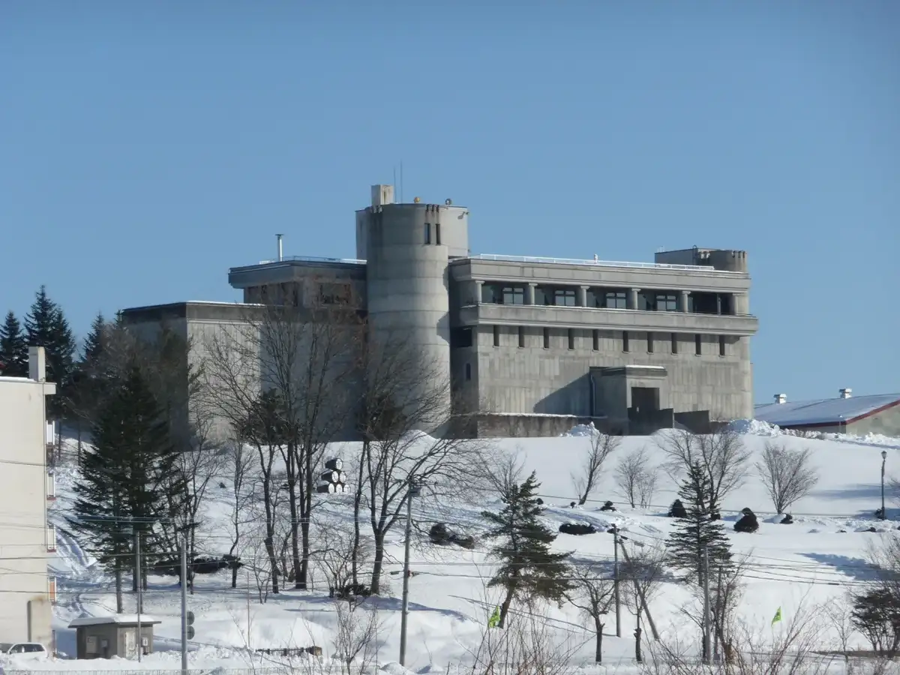
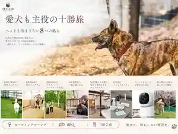
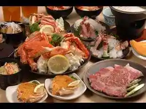
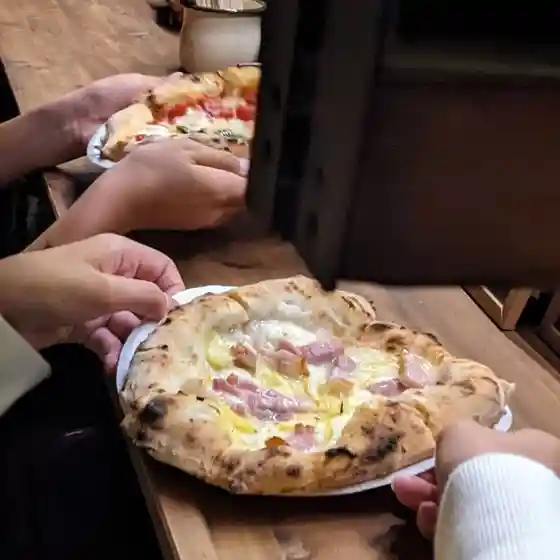
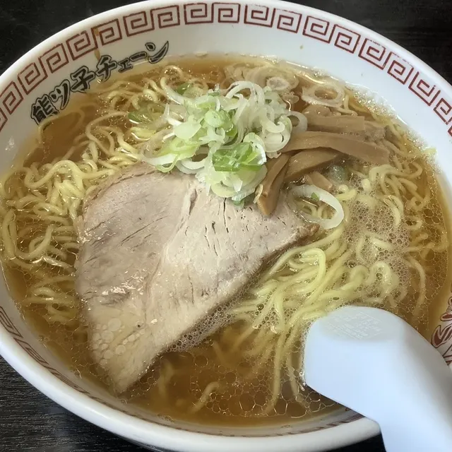
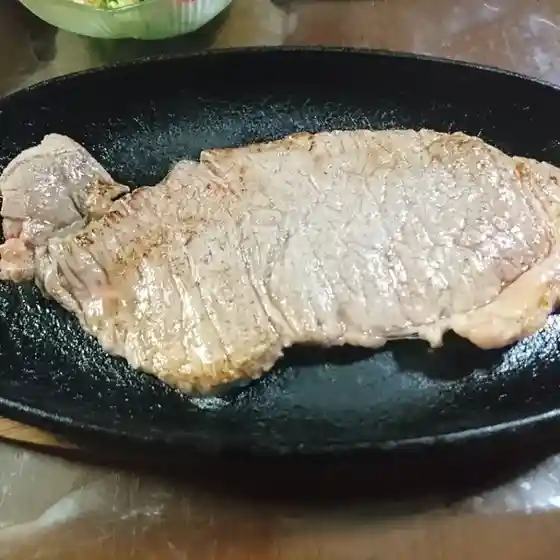
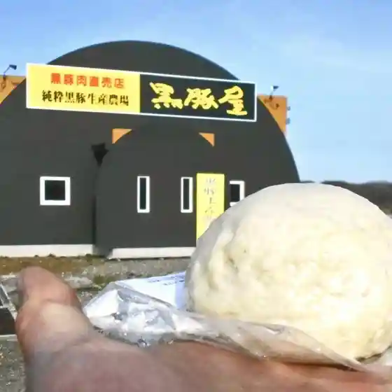
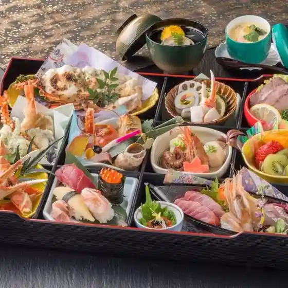
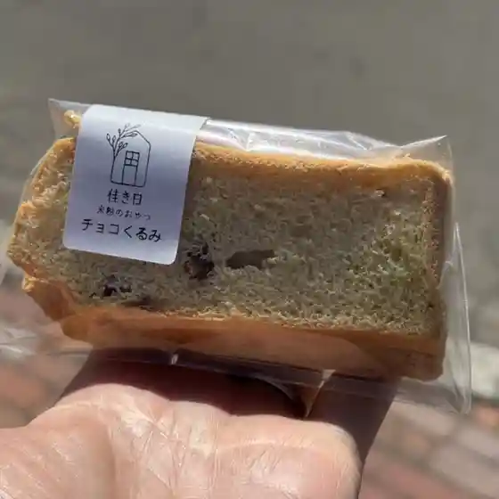

Ikeda
Ikedacho · Hokkaido
Ikedacho
Highlighted on the Hokkaido map.

池田町 (北海道)" width="1280" height="853" loading="lazy">Stay
十勝まきばの家 Winery & Villas

Tokachi Makibano Ie Winery & Villas
フンベHOFおおくま

Funbe Hof Ookuma
Dining
KIYOMI DONUTS
Kiyomi Donuts
ピッツェリア飛行船

Pittsueria Hikousen
熊ッ子ラーメン善

Kuma Tsu Ko Raamen Zen
旅の宿ワインの国

Tabi No Yado Wain No Kuni
すゞ木

Su Ki
黒豚屋

Kurobuta Ya
ご馳走家 ゆたか

Go Chisou Ie Yutaka
佳き日

Ka Ki Nichi
あかり
Akari
とかちのかまど
Tokachinokamado
とりせい
Torisei
Forest dining 清見
Forest Dining Kiyomi
池田北のコタンユースホステル
Ikeda Kita No Kotanyuusuhosuteru
シェルターショウジ
Shierutaashouji
池田ワイン製菓株式会社
Ikeda Wain Seika Kabushikigaisha
きまぐれごはん屋 いろはとね
Kimaguregohan Ya Irohatone
すゞ木旅館
Su Ki Ryokan
軽食 喫茶 ココレット
Keishoku Kissa Kokoretto
Cafe SORA
Cafe Sora
レストランよねくら
Resutoran Yonekura
十勝まきばの家
Tokachi Makibano Ie
おかしの小松
Okashino Komatsu
中華惣菜 竹内
Chuuka Souzai Takeuchi
グリーンリーフ・テラス
Guriinriifu Terasu